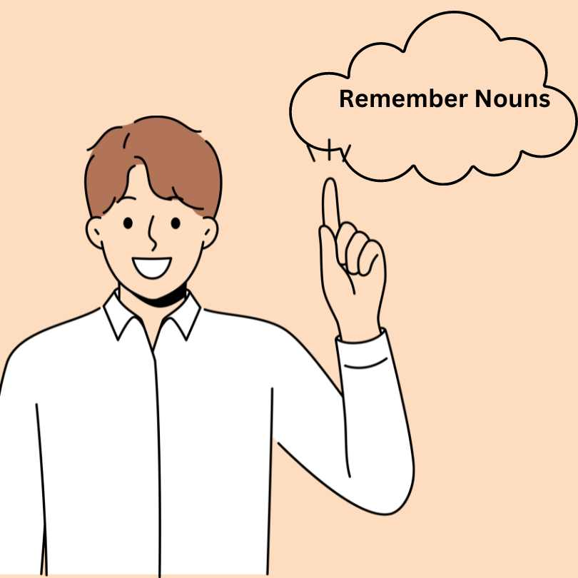

Nouns, also called naming words. They are used to name people, places, animals, objects and ideas.
People: woman, man, Juanita Brown, uncle
Places: planet, Texas, farm, high school
Animals/ Birds/ Reptiles etc.: dolphin, parrot, lion, lizard
THING: blackboard, Cupboard, bookmark
IDEA: success, affection, freedom, courage